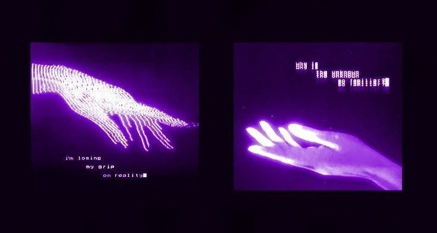
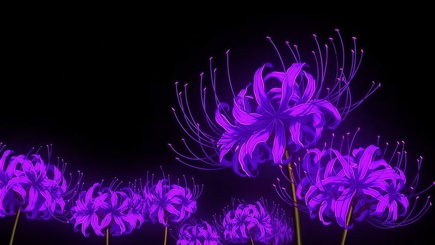

Eu sempre fui fechado. Fechado ao extremo. Eu não gosto de ninguém, quando gosto, são 5 pessoas que eu vou manter até o máximo possível
Quando eu te conheci, eu não queria conhecer ninguém, quando eu te conheci eu "odiava" a zero two, porque sou extremista, ou eu gosto, ou odeio, sem meio termo. E quer saber? eu também não pensei que gostaria de te conehcer, mas sim. EU amei. Eu não me arrependo, e essa é uma das poucas vezes que isso acontece desde a ultima.
Eu sinceramente, amo você. E isso pra mim é a maior declaração. Eu odeio essa palavra, porque sempre que me foram apresentados, eu acabei querendo me enfiar numa cova, literalmente. Todas as vezes que essa palavra me foi *Dada* ela me foi tirada a mão armada. Eu não sou acostumado com ela, mas por você, eu posso tentar me acostumar.
Eu produzi tudo isso, pra se tudo ser errado, você olhar pra esse aplicativo, e entender que este é o mínimo. Eu não posso te dar lírios, rosas, ou sua cor favorita, Roxo. Então, eu fiz um site lotado delas.

Dizem que não dá pra amar alguém que não dá pra tocar ou olhar nos olhos, mas pra mim, essa é a forma mais bonitia de começar a amar. Eu já vi tantas vezes pessoas passarem a se amar pessoalmente, e depois que a carne se sacia a paixão também se esvai, que eu passe a achar esse sentimento problemático quando dado, e não comprado.
Você me mostrou o contrário, todas as vezes que eu encarei o celular esperando sua notificação, todas as vezes que eu mandei mensagem sorrindo, logo após passar por algo que me faria passar horas chorando. Eu notei, quando eu abdiquei da minha confortável solitude, pra viveer a favor da sua suave meré.
A cada linha, das 3552 desse código imenso, A CADA LINHA, eu amei você, eu amei digitar, eu amei escrever, eu amei pensar em você por todo esse tempo, eu amei fazer isso ENQUANTO conversava com você, eu amei pensar em você em TODOS, os momentos. Essa foi reflexão mais calorosa que já fiz, a reflexão mais divertida, a reflexão mais feliz que eu já fiz, e o momento em que eu mais me orgulhei de saber fazer oque faço.